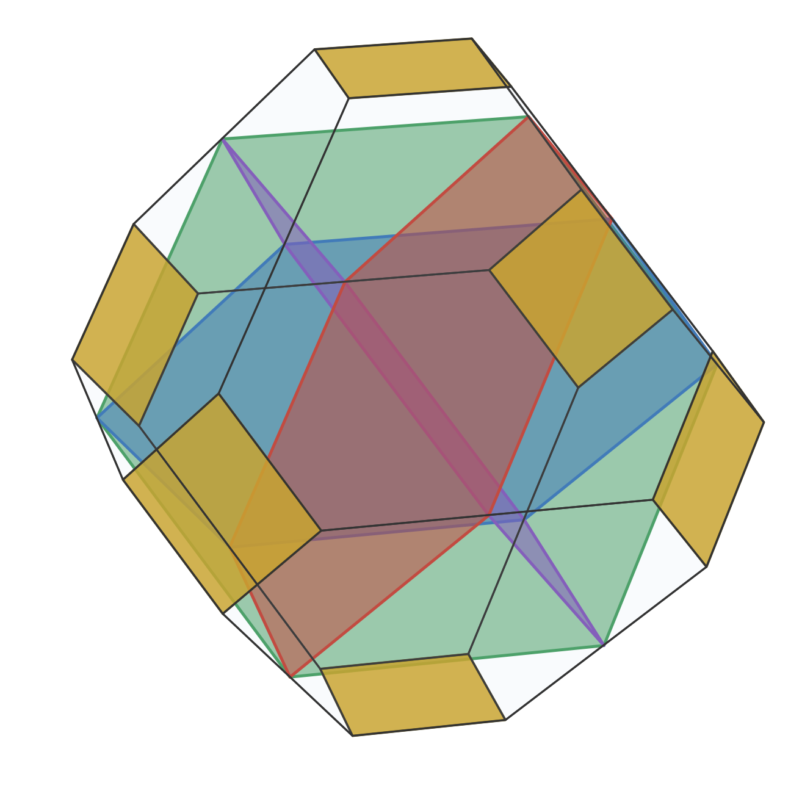

Write the numbers 1 to 5 in every possible order: 12345, 12354, …, 54321. There are 120 orders. Link two of them whenever one becomes the other by swapping two neighbouring values, 2 and 3 say. The result is a web of 120 knots and 240 bonds, and it is the skeleton of a four-dimensional solid, the 4D permutohedron. Its smallest rings are its faces: squares, where two swaps do not disturb each other, and hexagons, where three swaps go round and come back (Figure 1). This paper builds the 4D Vacuus of that solid: the few flat slices through its centre that between them carry every face, and so every rule of the web.
The 4D permutohedron is the convex hull of the 120 points (p₁, …, p₅) whose coordinates are 1, …, 5 in some order; it lies in the 4-space p₁ + … + p₅ = 15, centred at (3, 3, 3, 3, 3). It is simple (four edges at each corner) and has 240 edges, 150 two-dimensional faces (60 hexagons, 90 squares) and 30 cells (10 truncated octahedra, 20 hexagonal prisms). Its edges join orders that differ by swapping two neighbouring values, so its skeleton is the web above: four bonds at every knot, in ten directions. The following facts are classical and were recounted exactly (web_of_bonds.py): the number of bonds between two orders is the number of pairs they put in opposite order; 54321 is farthest from 12345, ten bonds away, along 768 shortest routes (Stanley's count of reduced words of the longest permutation); the 2-faces are the web's rings, a square for two swaps of disjoint value pairs and a hexagon for the braid ring sksk+1sk = sk+1sksk+1. In #104 the same solid was swept by a moving 3-space: 26 cells are born, 66 pairs swap and 26 cells die, and these are the numbers of orders with one, two and three descents (1, 26, 66, 26, 1).
DICTO's Vacuus solids are built from central slices: the octahedron from three squares through its centre that carry all its edges, the cuboctahedron from four hexagons. One dimension up the slices are 3D and carry the 2-faces. A 2-face of the 4D permutohedron does not pass through the centre, so together with the centre it spans exactly one 3-space through the centre: its central slice. The 4D Vacuus is the set of these slices.
A 2-face is an ordered split of the positions {1, …, 5} into three blocks B₁, B₂, B₃ of sizes (a, b, c): the positions in B₁ hold the a smallest values in any order, those in B₂ the next b, those in B₃ the largest c. Its central slice has the normal vector that takes the value c₁ = bc(b + c) on B₁, c₂ = −ac(a + 2b + c) on B₂ and c₃ = ab(a + b) on B₃ (it is orthogonal to (1, …, 1), constant on each block, and orthogonal to each block's sum; checked against exact elimination for every 2-face).
| slices | split (a, b, c) | normal | slice shape | edge lengths² | faces of the 4D solid carried |
|---|---|---|---|---|---|
| 30 | (1, 2, 2) | (8, 3, 3, −7, −7) | 32 corners, 52 edges, 14 squares + 8 hexagons | eight values, 13/18 to 8 | 2 squares |
| 20 | (1, 1, 3) | (9, −1, −1, −1, −6) | truncated-octahedron type: 6 squares + 8 hexagons | 2 and 56/9 | 2 hexagons |
| 10 | (1, 3, 1) | (3, 3, −2, −2, −2) | 24 corners, 42 edges, 18 squares + 2 hexagons | 2, 4, 8 | 2 hexagons |
| 5 | (2, 1, 2) | (4, −1, −1, −1, −1) | truncated octahedron: the permutohedron of 1, 2, 4, 5 | 2 and 8 | 6 squares |
Proof. The normal formula shows that a slice depends only on the blocks and the values (c₁, c₂, c₃); since c₁ > 0 > c₂, for five values two splits give the same slice only if they are reverses of each other (B₃, B₂, B₁), or, when a = c, have the same middle block (for an even number of values there is one more coincidence, Theorem 3). Counting: splits (1, 1, 3) and (1, 2, 2) give 5!/(1!1!3!) = 20 and 5!/(1!2!2!) = 30 slices; (1, 3, 1) and (2, 1, 2) give C(5, 3) = 10 and C(5, 1) = 5; in all 65, and 30·2 + 5·6 = 90 squares, 20·2 + 10·2 = 60 hexagons. Slices with the same split are images of one another under a permutation of the coordinates, so they are congruent. The shapes were computed in exact rational arithmetic: corners are the solid's corners on the slice and the points where edges cross it; every face proposed by a hull routine was confirmed exactly (all its corners on one plane, every other corner strictly on one side), and every shape has Euler number 2. ∎
An earlier floating-point count split the 30 congruent slices of the first row into several apparent types; the exact computation above supersedes it.
The five slices of the last row are the slices pi = 3: the middle value held in one place while the other four take 1, 2, 4, 5 in every order. Each is the 3D permutohedron of the values 1, 2, 4, 5: the DICTO 1:2 Truncated Octahedron, a truncated octahedron with squares of side 1 and hexagons whose sides are 1 and 2 in turn (√2 and 2√2 in these coordinates), and it carries the six squares of the 4D solid in which the middle value stays put. These five are the heart of the Vacuus (Figure 2).
Proof. A point lies in the permutohedron exactly when its coordinates sum to 15 and its k largest coordinates sum to at most 5 + 4 + … (the k largest values), for every k (majorization). With pi = pj = 3 and the other three q₁, q₂, q₃ summing to 9, these conditions reduce to 1 ≤ qm ≤ 5: a hexagon with corners the orders of (1, 3, 5), each at distance √8 from the centre and from its neighbours. The plane meets no corner or edge of the solid; its six corners are where it pierces 2-faces, which was confirmed exactly by intersecting the plane with all 150 faces. Three conditions pi = pj = pk = 3 leave q₁ + q₂ = 6 with 1 ≤ q ≤ 5, a segment; four leave the centre. ∎

The heart nests the dimensions inside one another: the 4D permutohedron of 1, …, 5 holds at its centre, five times, the 3D permutohedron of the four values that remain when the middle one is taken out; in the same way the hexagon of the orders of 1, 2, 3 holds the segment between the orders of 1 and 3. This works whenever the number of values is odd, so that there is a middle value to hold still.
The construction works for the permutohedron of 1, …, n in dimension n − 1: its ridges (faces one dimension below the cells) are the ordered splits into three blocks, and each spans one central slice with the centre.
| n (dimension) | 3 (2) | 4 (3) | 5 (4) | 6 (5) | 7 (6) | 8 (7) | 9 (8) |
|---|---|---|---|---|---|---|---|
| ridges | 6 | 36 | 150 | 540 | 1806 | 5796 | 18150 |
| Vacuus slices N(n) | 3 | 15 | 65 | 225 | 770 | 2443 | 7761 |
Proof. By the normal formula, a split with a ≠ c gives a slice whose normal takes three different values, and only the split and its reverse give it: the first sum. A split with a = c gives a normal with two values, c₁ on S = B₁ ∪ B₃ (of even size 2a) and c₂ on the middle block T; the ratio c₁ : c₂ = −b : 2a depends only on the sizes of S and T, so the slice is fixed by the unordered pair {S, T}, and every pair with |S| even and at least 2 occurs. When n is odd exactly one of S, T has even size: 2n−1 − 1 pairs. When n is even both are even or both odd, and the split (a, b, a) gives the same slice as (b/2, 2a, b/2) with S and T exchanged: 2n−2 − 1 pairs. Brute force over every ridge for n = 3, …, 9, with each slice found by exact elimination, gives the same numbers (vacuus_general.py). ∎
In two dimensions the Vacuus of the hexagon is its three long diagonals; in three, the truncated octahedron's 36 edges lie on 15 planes through its centre. Neither N(n) nor its three-valued part (3, 12, 50, 210, 707, 2380, …) is in the On-Line Encyclopedia of Integer Sequences (searched 11 November 2026).
DICTONIC's golden bond (#48, Theorem 4) is a family of solids T(x), the hull of all signed orders of (1 + x, x, 0), which with T(1/x) on the cube centres fills space. It is a walk through permutohedra.
Proof. The map y ↦ ½(y₁ + y₂ − y₃ − y₄, y₁ − y₂ + y₃ − y₄, y₁ − y₂ − y₃ + y₄) is an isometry of the 3-space y₁ + … + y₄ = 0 onto ordinary space. It sends the order (q, p, −p, −q) to (p + q, q − p, 0), and the 24 orders of −q, −p, p, q to the 24 signed orders of (p + q, q − p, 0), which are the corners of T(x) scaled by (q − p)/x when (1 + x)/x = (p + q)/(q − p), that is x = (q − p)/(2p). For x = τ, q = p(1 + 2τ) = pτ³. Checked exactly for x = 1/2, 1 and τ by comparing all 276 distances between corners (dictonic_family.py). ∎

(1) The Vacuus of other simple 4-polytopes, the Queens of #104 first: how many central slices carry their faces, and which of them are 3D solids already in the work. (2) The golden slice of the permutohedron honeycomb (the 4D permutohedra fill 4-space) as a non-repeating 3D filling: its shapes counted exactly. (3) The heart for seven values: the 6D permutohedron holds seven 5D permutohedra of 1, 2, 3, 5, 6, 7; how they are slotted. (4) A physical build of the heart: five card truncated octahedra cannot be slotted in ordinary space, but their ten crossing hexagons can be shown in the app.
G. M. Ziegler, Lectures on Polytopes, Springer GTM 152 (1995), Example 0.10 (the permutohedron, its faces as ordered partitions); R. P. Stanley, On the number of reduced decompositions of elements of Coxeter groups, European J. Combin. 5 (1984) 359–372 (768 = the number of reduced words of 54321); A. Björner and F. Brenti, Combinatorics of Coxeter Groups, Springer GTM 231 (2005) (the weak order; braid and commutation relations); A. Postnikov, Permutohedra, associahedra, and beyond, IMRN 2009 (permutohedra of arbitrary values); J. H. Conway and N. J. A. Sloane, Sphere Packings, Lattices and Groups (the permutohedron as the Voronoi cell of An*); OEIS searches 11 Nov 2026 for 3, 15, 65, 225, 770, 2443 and 3, 12, 50, 210, 707, 2380 (no match); arXiv 2509.13877, To cover a permutohedron (covering corners by hyperplanes, a different question); arXiv 1305.6097, Permutonestohedra. DICTO's works: #48 (T(x), the golden bond), #104 (the sweep), the Vacuus builds (the octahedron Vacuus in cardboard).